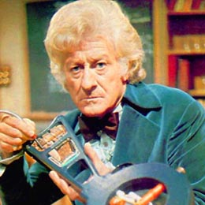

The third Doctor is portrayed by actor Jon Pertwee
|  | The Third Doctor is the third incarnation of the protagonist of the long-running BBC television science fiction series Doctor Who. He was portrayed by actor Jon Pertwee. The Third Doctor was a suave, dapper, technologically oriented, and authoritative man of action who not only practised Venusian Aikido (or Karate) but enjoyed working on gadgets and riding all manner of vehicles, such as the Whomobile and his pride and joy, the canary-yellow vintage roadster nicknamed "Bessie," a construct which featured such modifications as a remote control, dramatically increased speed capabilities, and inertial dampeners. The First Doctor, upon meeting the Third, described him indignantly as a "dandy". |